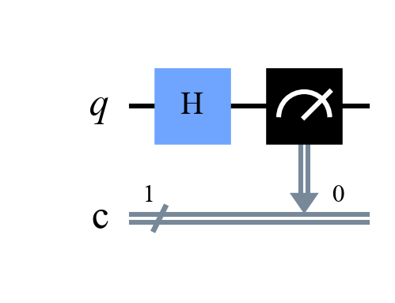
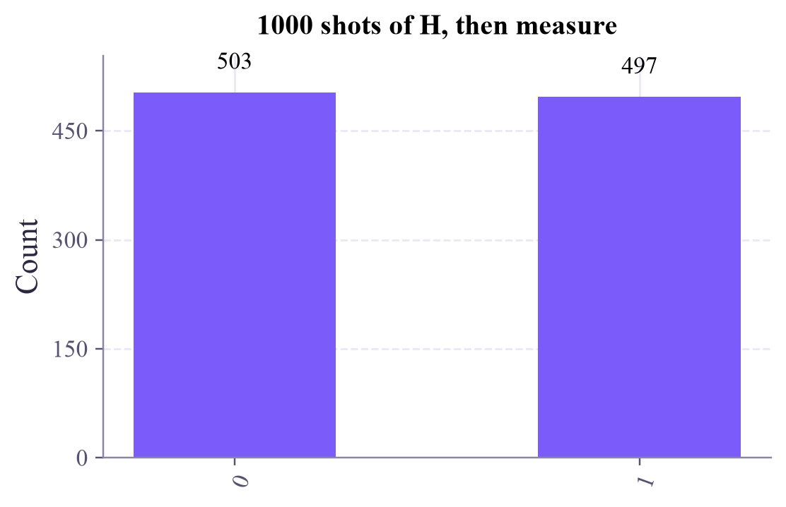

Quantum Computing
 about 11 min
about 11 min qc-w1d4.ipynb
qc-w1d4.ipynb
Your first circuits in Qiskit
Wires, gates and meters: build a quantum circuit, draw it, run it a thousand times, and read the bitstrings the way Qiskit writes them.
In this lesson you will
- Read a circuit diagram from left to right
- Know what the X and H gates do to
- Build, draw and run circuits in Qiskit, and read multi-qubit bitstrings in Qiskit's order
Warm-up
1 minThe world's smallest random number generator

So far the states fell from the sky: we typed in the amplitudes. A real quantum computer can't do that. It starts every qubit in and changes it step by step with gates. The list of steps is a circuit. Today you build your first ones, including a truly random coin in one line.
Big idea
3 minReading a circuit
A circuit diagram is read left to right, like music:
- Each horizontal wire is one qubit. Every qubit starts in .
- Each box on a wire is a gate, an operation on that qubit.
- A meter at the end is a measurement: it turns the qubit into an ordinary bit.
Two gates for today. A gate is a matrix that acts on the amplitude vector (week 3 is all about this):
X, the quantum NOT
It swaps the two amplitudes, just like a classical NOT flips a bit.
H, the Hadamard
It makes an equal mix of and : measured, a fair 50/50 coin.
With several qubits, a measurement gives a bitstring. Qiskit writes it with qubit 0 on the right, like the digits of a binary number: 01 means qubit 1 is 0 and qubit 0 is 1.
The one thing everybody trips over
In the circuit picture, qubit 0 is the top wire. In the bitstring, qubit 0 is the rightmost character. Top of the picture = right of the string.
Play
4 minBuild circuits by tapping
Pick a gate, then tap a spot on a wire. The bars show the probability of each bitstring, and the buttons at the bottom measure for real. This circuit lab comes back many times in the coming weeks.
About the last challenge
Two H gates in a row give back, every time: the second H undoes the first. The two "routes" to outcome 1 cancel each other out. That's interference, and it gets its own lesson in week 3.
Code
2 minThe same circuits in Qiskit
The notebook for this lessonEvery code cell below, with what it printed, is in
qc-w1d4.ipynb. To change the code and run it yourself, open the notebook in Google Colab (free, in your browser) or download it for your own Jupyter.from qiskit import QuantumCircuit
qc = QuantumCircuit(1, 1) # 1 qubit, plus 1 classical bit to store the result
qc.h(0) # Hadamard gate on qubit 0: |0> becomes an equal mix of 0 and 1
qc.measure(0, 0) # measure qubit 0, write the result into classical bit 0
qc.draw("mpl", style="clifford")What it printed in the notebook
from qiskit.primitives import StatevectorSampler
sampler = StatevectorSampler(seed=42) # seed: repeatable "randomness"
job = sampler.run([qc], shots=1000)
result = job.result()[0] # results for our (first and only) circuit
counts = result.data.c.get_counts() # "c" is the name of the classical register
print(counts)What it printed in the notebook
{'1': 497, '0': 503}from qiskit.visualization import plot_histogram
plot_histogram(counts, color="#7b5cfa", title="1000 shots of H, then measure", figsize=(5.2, 3.4))What it printed in the notebook

bits = result.data.c.get_bitstrings()
print("first 40 shots:", "".join(bits[:40]))What it printed in the notebook
first 40 shots: 1011011100011100101110111000011100000001
Several small recipes at once. Predict each line before you look:
recipes = {
"measure only": [],
"X": ["x"],
"H": ["h"],
"X then H": ["x", "h"],
"H then H": ["h", "h"],
}
circuits = []
for gates in recipes.values():
c = QuantumCircuit(1, 1)
for g in gates:
getattr(c, g)(0) # same as c.x(0) or c.h(0)
c.measure(0, 0)
circuits.append(c)
results = sampler.run(circuits, shots=1000).result()
for name, res in zip(recipes, results):
print(f"{name:>12}: {res.data.c.get_counts()}")What it printed in the notebook
measure only: {'0': 1000}
X: {'1': 1000}
H: {'1': 497, '0': 503}
X then H: {'1': 497, '0': 503}
H then H: {'0': 1000}qc2 = QuantumCircuit(2)
qc2.x(0) # qubit 0 becomes 1 for sure
qc2.h(1) # qubit 1 becomes a fair coin
qc2.measure_all()
print(qc2.draw("text"))
print(sampler.run([qc2], shots=1000).result()[0].data.meas.get_counts())What it printed in the notebook
┌───┐ ░ ┌─┐
q_0: ┤ X ├─░─┤M├───
├───┤ ░ └╥┘┌─┐
q_1: ┤ H ├─░──╫─┤M├
└───┘ ░ ║ └╥┘
meas: 2/═════════╩══╩═
0 1
{'11': 497, '01': 503}Your turn
2 minYour turn: three qubits
Build a 3-qubit circuit where qubit 0 is a fair coin, qubit 1 is always 1 and qubit 2 is always 0. Write down the two bitstrings you expect before running it.
qc3 = QuantumCircuit(3)
# TODO: add gates here
qc3.measure_all()
print(sampler.run([qc3], shots=1000).result()[0].data.meas.get_counts())Need a hint?
One gate on qubit 0, one on qubit 1, none on qubit 2. Then read the strings right to left: q0 is the last character.
Show a solution
qc3 = QuantumCircuit(3)
qc3.h(0) # qubit 0: fair coin
qc3.x(1) # qubit 1: always 1
# qubit 2: no gate, stays 0
qc3.measure_all()
print(qc3.draw("text"))
print(sampler.run([qc3], shots=1000).result()[0].data.meas.get_counts())
print("Read right to left: q0 is the coin, q1 = 1, q2 = 0, so only 010 and 011 appear.")What it printed in the notebook
┌───┐ ░ ┌─┐
q_0: ┤ H ├─░─┤M├──────
├───┤ ░ └╥┘┌─┐
q_1: ┤ X ├─░──╫─┤M├───
└───┘ ░ ║ └╥┘┌─┐
q_2: ──────░──╫──╫─┤M├
░ ║ ║ └╥┘
meas: 3/═════════╩══╩══╩═
0 1 2
{'011': 497, '010': 503}
Read right to left: q0 is the coin, q1 = 1, q2 = 0, so only 010 and 011 appear.Check yourself
2 minQuick check
Question 1 of 3
What does the circuit X → measure give over 100 shots?
Question 2 of 3
Two qubits are measured and Qiskit reports
10. Which qubit is 1?Question 3 of 3
What does H → H → measure give?
Wrap-up
1 minToday in one sentence
Machine-learning link
A quantum ML model is a circuit too: some gates load the data, some gates have trainable angles, and the measured bits become the prediction. Everything you build in this tutorial is a piece of such a model.
Go deeper (optional)
The Qiskit documentation's "Hello world" tutorial builds and runs a circuit in the same way. Nielsen and Chuang, section 1.3.4, introduces circuit diagrams.
Next in Quantum Computing: Friday's project, quantum coins with exactly the bias you want.

That's the lesson!
Tap the button to save it. Short and steady wins.
Marked by mistake? Undo